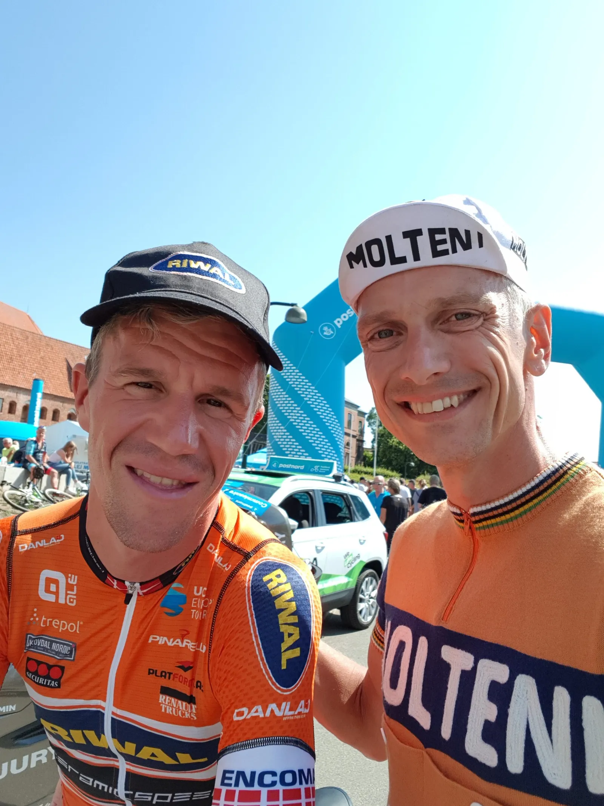

Transfernyt: Squadra Molteni i spændende forhandlinger – kun få detajler mangler i spektakulært skifte!

Det er ikke kun på etaperne i PostNord Danmark Rundt at der har været hektisk aktivitet de sidste 5 dage. Adskillige ryttere har forhandlet næste sæsons kontrakter på plads, ligesom sportsdirektørerne har kikket efter potentielle forstærkninger. Således også G.S. Squadra Molteni.
Det er ikke nogen hemmelighed at vi er i markedet, udtaler Niels Bjørnsteen, Molteni HQ. Der bliver revet og flået i Molteni-rytterne af vores desperate konkurrenter. De mangler stærke folk og tilbuddene er faktisk generøse. Men som TV2 synger: ”det er stadig bedre at rive i end i at blive revet i”, så vi er som altid i offensiven! Helt konkret – og selvfølgelig diskret – er vi ude efter Chris Anker, som udover at bære en orange trøje med stil, går ind til næste sæson som holdejer og ikke længere som rytter på Riwal-holdet. Det kan oplagt kombineres med en position hos Squadra Molteni, som med lanceringen af ”Radio Molteni” også ser store perspektiver i ekspertkommentator-delen.
Ingen tvivl, det er en personlighed fra allerøverste hylde – men vi har kontakt – og på forhandlingsniveau er vi nede i detaljer omkring materiellet. Det ser rigtigt lovende ud, slutter Bjørnsteen.
Opdateres….
